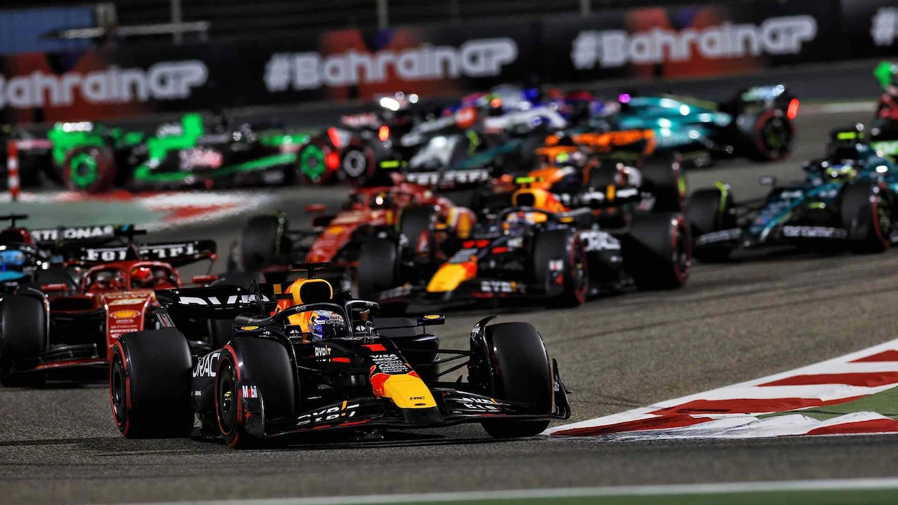
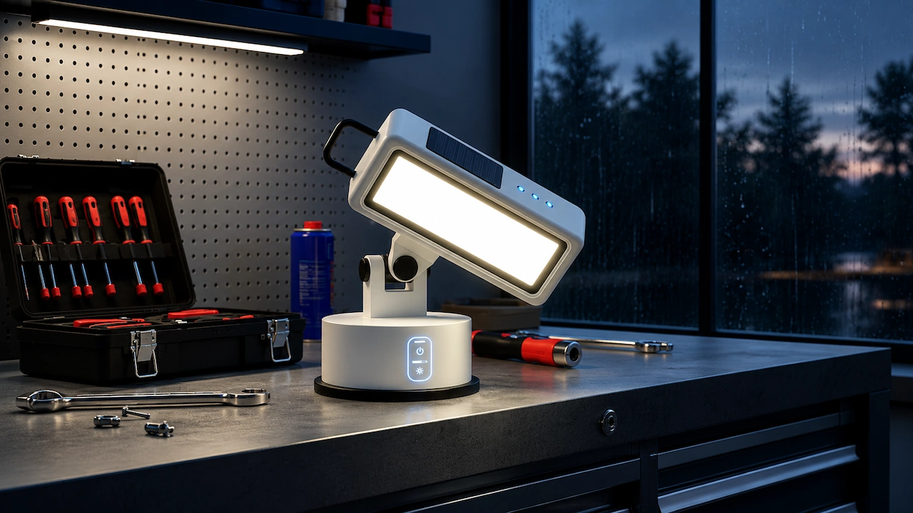

I'm 18 years old and building my path as a developer from technical school. I'm passionate about creating things that work well and look even better.
A bit of context about my background and what I can do.
I’m Benicio Pacheco, 18 years old, based in Buenos Aires, Argentina. I’m studying at a technical school where I specialize in web development. Since I started learning to code I’ve been hooked — there’s something really satisfying about writing code and seeing something work in the browser.
I combine my formal schoolwork with personal projects where I put everything I learn into practice. My most ambitious project so far is a Formula 1 hub I built from scratch. I’m actively looking for my first professional opportunity — internship, junior role, or collaboration — where I can keep growing and contribute from day one.
I’m a fast learner, I adapt quickly to new environments and tools, and I communicate clearly. I enjoy working in a team as much as working independently, and I always aim for code that is clean, readable, and well-structured.
Technical education in computing, covering web development (HTML, CSS, JavaScript), OOP (C/Java), PC and server assembly and maintenance, operating system installation, and SQL databases.
Hands-on practice through the school’s professionalizing program: PC and server assembly and maintenance, installation and configuration of operating systems for both desktops and servers.
Personal projects where I apply and expand what I learn every day.

Dynamic Formula 1 website with an interactive race calendar, standings table, real-time tracking and a design inspired by the official F1 aesthetic.

Sustainable solar lighting e-commerce site with product catalog, information pages and contact form.
Always open to opportunities, collaborations, or just chatting about code.